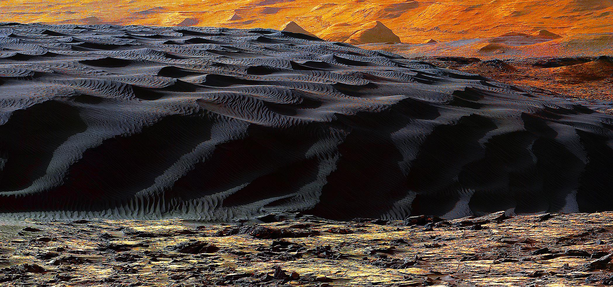
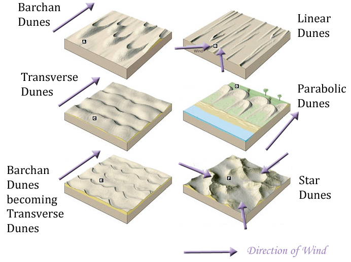
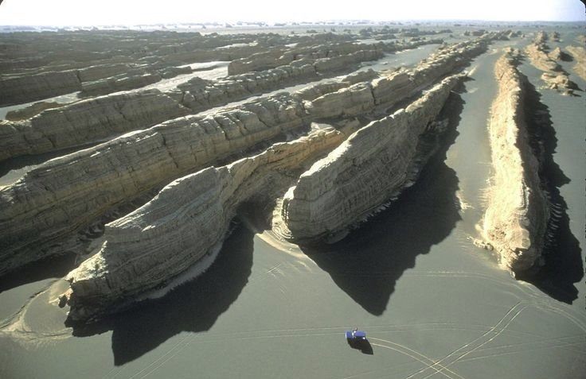

Can the surface of Mars tell us what the winds there look like?
Well...kinda. Once upon a time way back in my undergrad years I took it upon myself, Nick Teanby, and Elliot Sefton Nash to find out. I'll run through my first major research project, where despite the extraterrestrial setting I got to grips with tools I've come to use a lot since, such as satellite images and general circulation models (GCMs).
But Why?
Well, much like the Arctic, measuring things on Mars is pretty hard. To directly measure the wind at a point on the Martian surface costs a fair bit of money. So, most of the time we have to rely on simulations of the Martian atmosphere with general circulation models (GCMs) to fill in all the gaps. The problem is, how do we know these GCMs are getting the winds right if we don't have direct measurements to compare them to? One option is to look for "proxies" for the winds, i.e. things which we can measure, which can be used to infer what the wind speed or direction might be.
Aeolian Features on Earth
Aeolian features are landforms formed through wind driven erosion, transportantion and deposition of material. From studying features on Earth, we can build an understanding of how different types of dunes show different wind directions:
Yardangs are another desert feature which are found in many places on earth. They align themselves perpendicular to the wind:
Aeolian Features on Mars
....Write stuff here